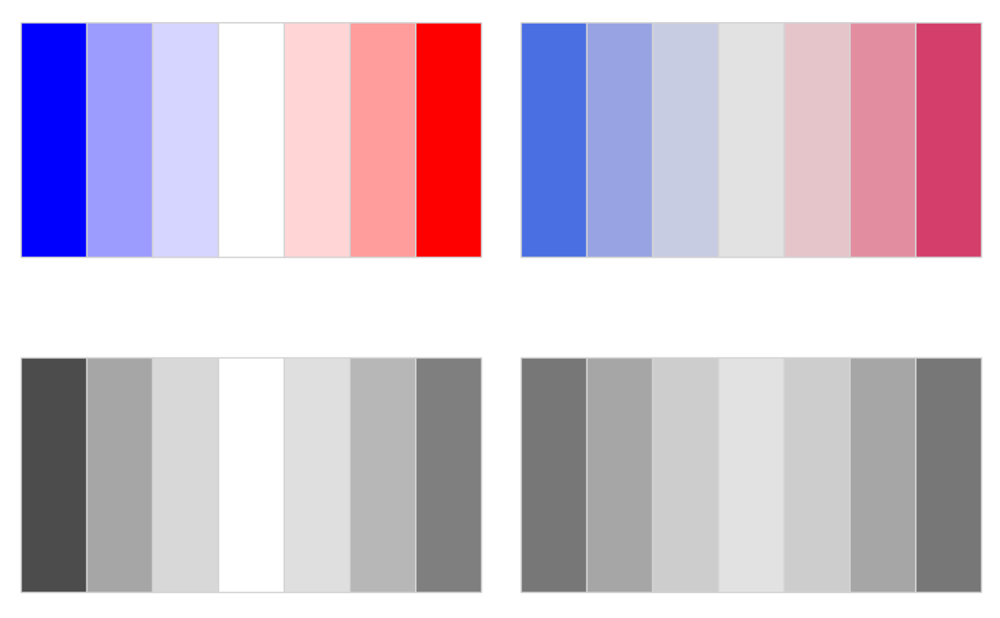
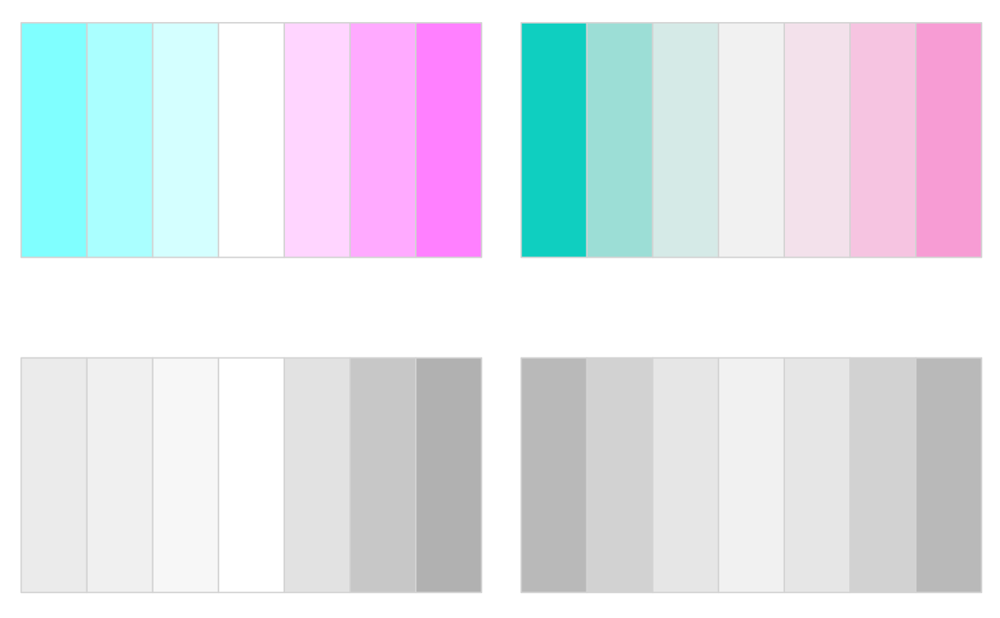
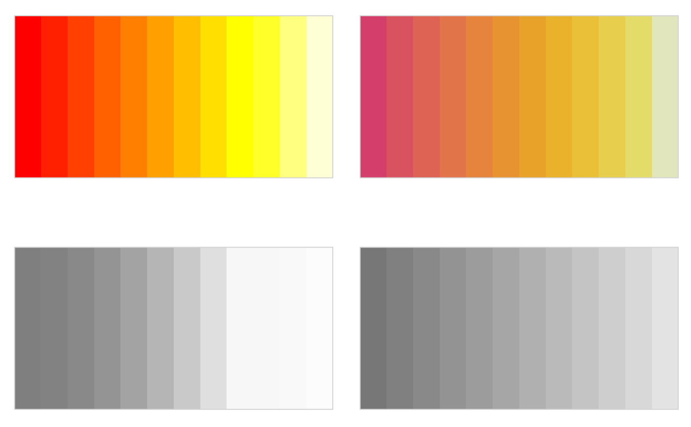
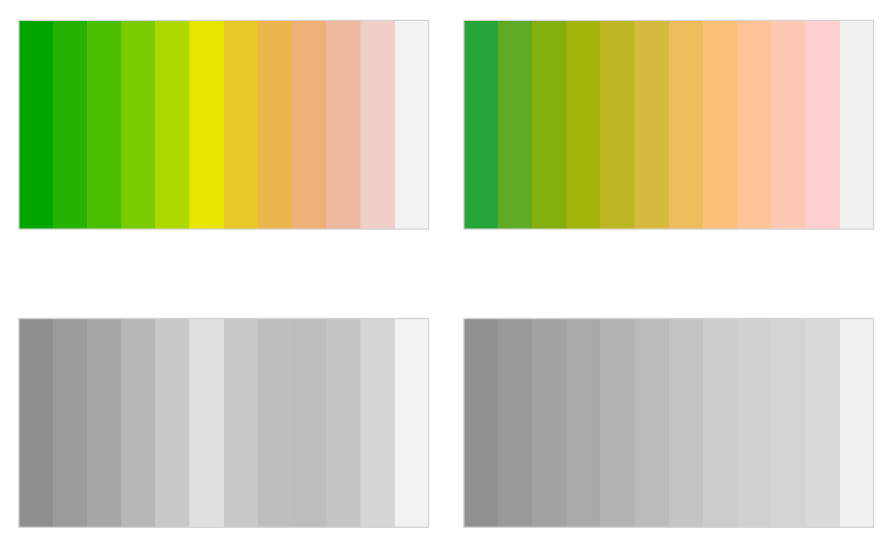
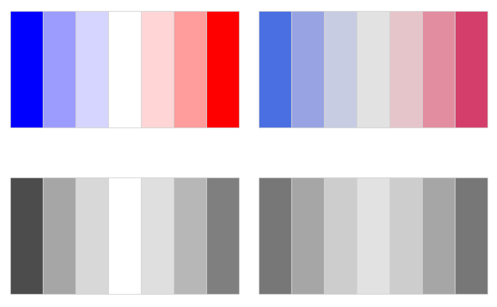
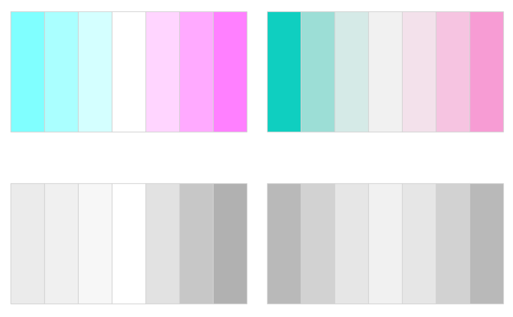
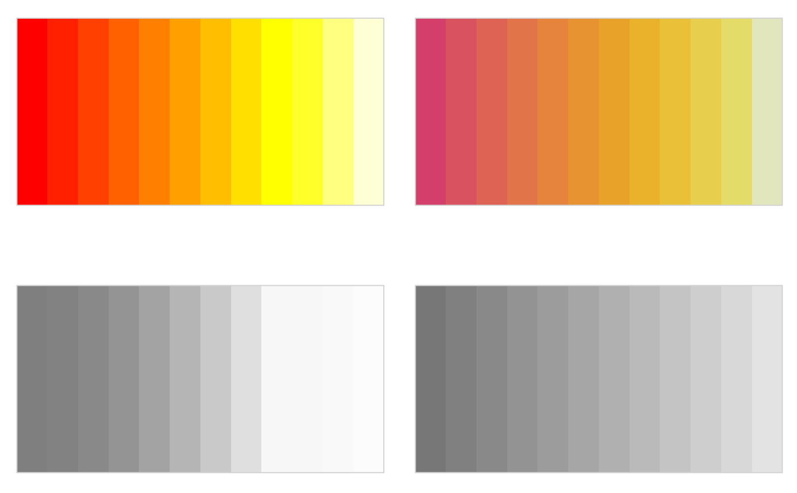
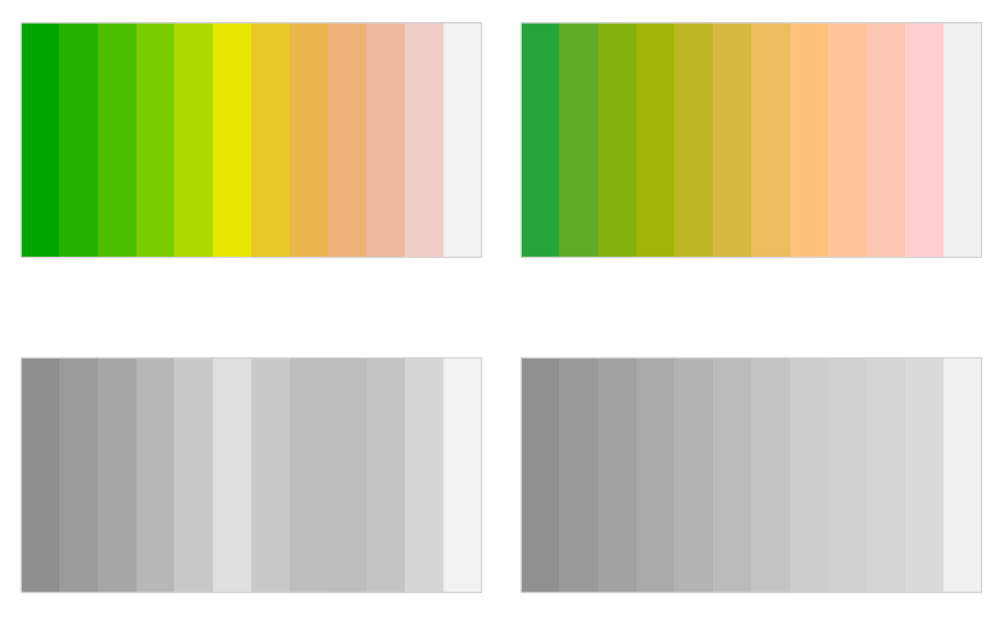

HCL (and HSV) Color Palettes Corresponding to Base R Palettes
rainbow_hcl.RdColor palettes based on the HCL (and HSV) color space to replace base R palettes.
rainbow_hcl(
n,
c = 50,
l = 70,
start = 0,
end = 360 * (n - 1)/n,
gamma = NULL,
fixup = TRUE,
alpha = 1,
...
)
heat_hcl(
n,
h = c(0, 90),
c. = c(100, 30),
l = c(50, 90),
power = c(1/5, 1),
gamma = NULL,
fixup = TRUE,
alpha = 1,
...
)
terrain_hcl(
n,
h = c(130, 0),
c. = c(80, 0),
l = c(60, 95),
power = c(1/10, 1),
gamma = NULL,
fixup = TRUE,
alpha = 1,
...
)
diverging_hsv(
n,
h = c(240, 0),
s = 1,
v = 1,
power = 1,
gamma = NULL,
fixup = TRUE,
alpha = 1,
...
)Arguments
- n
the number of colors (\(\ge 1\)) to be in the palette.
- c, c.
chroma value in the HCL color description.
- l
luminance value in the HCL color description.
- start
the hue at which the rainbow begins.
- end
the hue at which the rainbow ends.
- gamma
Deprecated.
- fixup
logical. Should the color be corrected to a valid RGB value before correction?
- alpha
numeric vector of values in the range
[0, 1]for alpha transparency channel (0 means transparent and 1 means opaque).- ...
Other arguments passed to
hex.- h
hue value in the HCL or HSV color description, has to be in [0, 360] for HCL and in [0, 1] for HSV colors.
- power
control parameter determining how chroma and luminance should be increased (1 = linear, 2 = quadratic, etc.).
- s
saturation value in the HSV color description.
- v
value value in the HSV color description.
Value
A character vector with (s)RGB codings of the colors in the palette.
Details
Based on the general qualitative, sequential, and diverging hcl_palettes
within the colorspace package, convenience functions are provided as
alternatives to standard base R palettes (which are highly saturated
and too flashy).
rainbow_hcl computes a rainbow of colors via qualitative_hcl
defined by different hues given a single value of each chroma and luminance.
It corresponds to rainbow which computes a rainbow in HSV
space.
heat_hcl is an implementation of heat.colors in
HCL space based on a call to sequential_hcl. Similarly,
terrain_hcl palette also calls sequential_hcl with different
parameters, providing colors similar in spirit to terrain.colors
in HCL space.
diverging_hsv (and equivalently its alias diverge_hsv)
provides an HSV-based version of diverging_hcl. Its purpose
is mainly didactic to show that HSV-based diverging palettes are less
appealing, more difficult to read and more flashy than HCL-based diverging
palettes. diverging_hsv is similar to cm.colors.
References
Zeileis A, Hornik K, Murrell P (2009). Escaping RGBland: Selecting Colors for Statistical Graphics. Computational Statistics & Data Analysis, 53, 3259--3270. doi:10.1016/j.csda.2008.11.033 Preprint available from https://www.zeileis.org/papers/Zeileis+Hornik+Murrell-2009.pdf.
Stauffer R, Mayr GJ, Dabernig M, Zeileis A (2015). Somewhere over the Rainbow: How to Make Effective Use of Colors in Meteorological Visualizations. Bulletin of the American Meteorological Society, 96(2), 203--216. doi:10.1175/BAMS-D-13-00155.1
Examples
## convenience demo function
wheel <- function(col, radius = 1, ...)
pie(rep(1, length(col)), col = col, radius = radius, ...)
## compare base and colorspace palettes
## (in color and desaturated)
par(mar = rep(0, 4), mfrow = c(2, 2))
## rainbow color wheel
wheel(rainbow_hcl(12))
wheel(rainbow(12))
wheel(desaturate(rainbow_hcl(12)))
wheel(desaturate(rainbow(12)))
 ## diverging red-blue colors
swatchplot(
diverging_hsv(7),
desaturate(diverging_hsv(7)),
diverging_hcl(7, c = 100, l = c(50, 90)),
desaturate(diverging_hcl(7, c = 100, l = c(50, 90))),
nrow = 2
)

## diverging cyan-magenta colors
swatchplot(
cm.colors(7),
desaturate(cm.colors(7)),
diverging_hcl(7, "Cyan-Magenta"), ## or, similarly: Tropic
desaturate(diverging_hcl(7, "Cyan-Magenta")),
nrow = 2
)

## heat colors
swatchplot(
heat.colors(12),
desaturate(heat.colors(12)),
heat_hcl(12),
desaturate(heat_hcl(12)),
nrow = 2
)

## terrain colors
swatchplot(
terrain.colors(12),
desaturate(terrain.colors(12)),
terrain_hcl(12),
desaturate(terrain_hcl(12)),
nrow = 2
)

## diverging red-blue colors
swatchplot(
diverging_hsv(7),
desaturate(diverging_hsv(7)),
diverging_hcl(7, c = 100, l = c(50, 90)),
desaturate(diverging_hcl(7, c = 100, l = c(50, 90))),
nrow = 2
)

## diverging cyan-magenta colors
swatchplot(
cm.colors(7),
desaturate(cm.colors(7)),
diverging_hcl(7, "Cyan-Magenta"), ## or, similarly: Tropic
desaturate(diverging_hcl(7, "Cyan-Magenta")),
nrow = 2
)

## heat colors
swatchplot(
heat.colors(12),
desaturate(heat.colors(12)),
heat_hcl(12),
desaturate(heat_hcl(12)),
nrow = 2
)

## terrain colors
swatchplot(
terrain.colors(12),
desaturate(terrain.colors(12)),
terrain_hcl(12),
desaturate(terrain_hcl(12)),
nrow = 2
)
